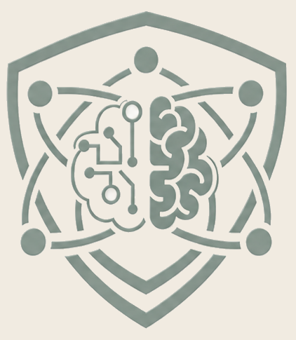

Designs and delivers TIA Portal and industrial automation curriculum for engineers, technicians, and dealer networks. SITRAIN Level 2 Certified Instructor.

AI-Epistemic Resilience
My framework for using AI while keeping your own judgment: verify claims, recognize uncertainty, and reflect on how you reached a conclusion. The book was published in 2026, and a free self-paced course for professionals is online.
View the course · Get the book on Amazon